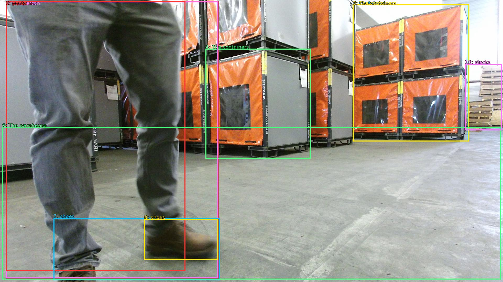

The image shows a person walking in a warehouse with stacks of orange and black shipping containers. The containers are stacked on top of each other and appear to be made of metal. The person is wearing grey pants and brown shoes. The warehouse has a concrete floor and there are stacks of cardboard boxes in the background. The image appears to be taken from a low angle, looking down on the person's feet.

Original · Caption raw · Grounding raw · Koordinate
Številke so lokalni ID regije. Dolge slikovne oznake so skrajšane; spodaj so celotne fraze. Napovedane regije se lahko prekrivajo ali opisujejo skupine.
| ID | Celotna fraza | bbox xyxy |
|---|---|---|
| 1 | a person | [22.079999923706055, 4.860000133514404, 834.239990234375, 1067.580078125] |
| 2 | containers | [1346.8800048828125, 16.739999771118164, 1788.47998046875, 541.6199951171875] |
| 3 | The containers | [1346.8800048828125, 16.739999771118164, 1790.39990234375, 541.6199951171875] |
| 4 | The containers | [784.3200073242188, 186.3000030517578, 1185.5999755859375, 607.5] |
| 5 | The person | [22.079999923706055, 5.940000057220459, 832.3200073242188, 1065.4200439453125] |
| 6 | pants | [22.079999923706055, 4.860000133514404, 707.5199584960938, 1037.340087890625] |
| 7 | shoes | [204.47999572753906, 835.3800048828125, 838.0799560546875, 1072.9801025390625] |
| 8 | shoes | [550.0800170898438, 838.6200561523438, 832.3200073242188, 994.1400146484375] |
| 9 | The warehouse | [8.639999389648438, 486.5400085449219, 1911.3599853515625, 1070.820068359375] |
| 10 | stacks | [1775.0399169921875, 244.62001037597656, 1915.199951171875, 498.4200134277344] |